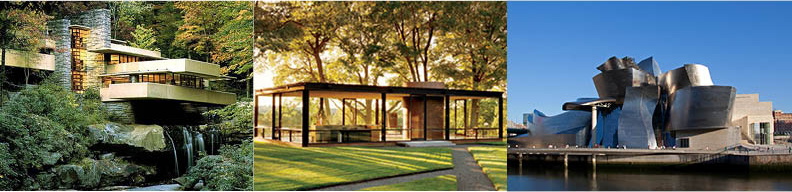

AMERICA'S ARCHITECTS
A beginer's introduction

America can be catagorised into three decades of modern architecture that can be broadly represented by the following architects.
Frank Lloyd Wright
Phillip Johnson
Frank Gehry